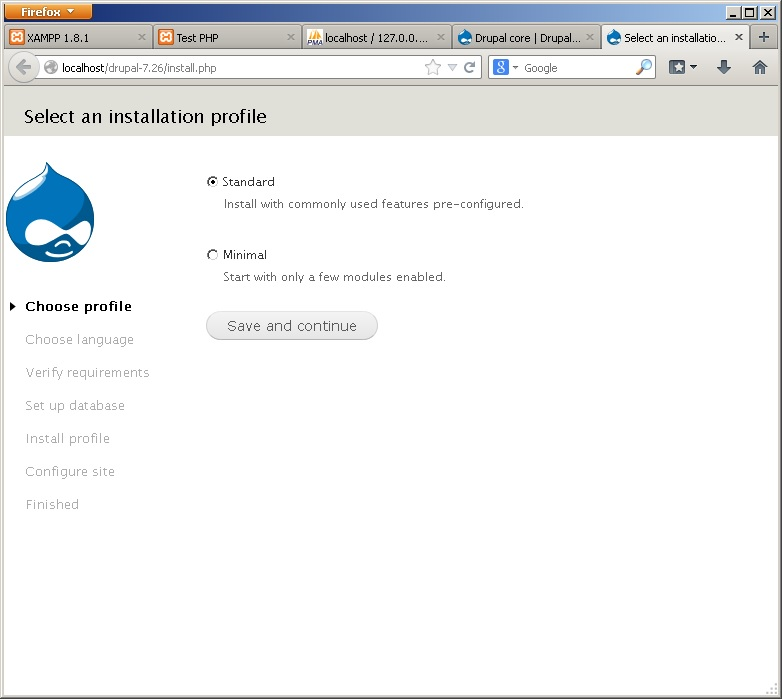

به قسمت پنجم دوره آموزشی مقدمات وب خوش آمدید. امیدوارم که قسمت های قبلی را پیگیری کرده باشید.
امروز قصد داریم Drupal را بر روی کامپیوتر شخصی مان نصب کنیم. دروپال یک سیستم مدیریت محتوای متن باز و یک فریمورک برای توسعه ی اپلیکیشن های تحت وب می باشد.
از دروپال می توان برای ساخت هر چیزی، از وبلاگ های شخصی تا اپلیکشن های سازمانی استفاده کرد. هزاران افزونه (ماژول) و طرح به شما اجازه می هد که بتوانید هر سایتی که تصور کنید را بسازید.
برای شروع کار، به صفحه ی اصلی Drupal.org مراجعه کنید. سایت Drupal.org مرکز رسمی این پروژه است و باید با آن کاملا انس بگیرید زیرا در آینده بسیار با آن کار خواهید داشت.
کمی داخل این سایت حرکت کنید و روی لینک های آن کلیک کنید تا با ساختار سایت بیشتر آشنا شوید.
سایت Drupal.org میزبان تعداد بسیار زیادی (ده ها هزار) پروژه است. پروژه های دروپال به انواع زیر تقسیم می شوند:
- پروژه ی هسته ی دروپال که همان اصل نرم افزار دروپال است و ما آن را به نام Drupal یا Drupal Core می شناسیم.
- افزونه های دروپال که به نام Module شناخته می شوند. ماژول ها امکانات اضافی را به دروپال اضافه می کنند. بعدا بسیار با آنها کار خواهیم داشت.
- قالب های دروپال که به نام theme شناخته می شوند. و وظیفه ی شکل دادن به سایت های دروپالی را به عهده دارند. شما در آینده باید بتوانید خودتان تم های مورد نظرتان را طراحی کنید.
- توزیع های دروپال که تحت عنوان Distributions معرفی می شوند و نام دیگر آن profile های دروپال یا installation profiles است. هر توزیع دروپال، پس از نصب، یک پیکربندی خاص را در دروپال به وجود می آورد که برای یک کاربرد خاص طراحی و بهینه شده است. یک توزیع دروپال، شامل تعدادی ماژول و تم و پیکربندی و ... است.
- پروژه های خود سایت drupal.org (زیرا خود سایت drupal.org هم متن باز است و حاصل فعالیت افراد داوطلب است!)
- ترجمه های دروپال که در یک سایت جدا نگهداری و میزبانی می شوند. و ترجمه ی فارسی آن نیز توسط تیم ترجمه ی دروپال در ایران مدیریت می شود و بعدا راجع به آن بیشتر خواهم گفت.
اگر دقت کنید، کلیه ی پروژه های ماژول، قالب، و هسته ی دروپال، دارای صفحه ی مختص خودشان هستند و آدرس آن ها به صورت زیر است:
http :// drupal.org / project / نام پروژه
به عنوان نمونه آدرس برای پروژه ای به نام drupal (که خود هسته ی دروپال می باشد)، به صورت زیر خواهد بود.
http://drupal.org/project/drupal
و یا صفحه ی پروژه ای به نام views (که یک ماژول معروف برای Drupal است) به صورت زیر می باشد.
http://drupal.org/project/views
دانستن این ساختار آدرس دهی صفحات سایت drupal.org بعدا به شما کمک خواهد کرد که آسان تر در سایت حرکت کنید و مطلب مورد نظرتان را پیدا کنید.
اکنون برای دانلود دروپال به صفحه ی پروژه ی دروپال مراجعه کنید:
تصویر فوق، صفحه ی اصلی پروژه ی drupal است.
در این صفحه، اطلاعات زیادی را در خصوص این پروژه می توانید کسب کنید. در نوار سمت راست، ابتدا نام افرادی که در توسعه ی این پروژه فعالیت کرده اند را مشاهده می کنید.
همانطور که می بینید پروژه ی هسته ی دروپال، در حال حاضر، پنج نفر نگهدارنده (Maintainer) دارد و 93 نفر توسعه دهنده (comitter) در کدهای دروپال تغییر ایجاد می کنند.
البته در واقع تعداد افرادی که در پروژه سهیم هستند (از جمله افرادی که اشکالات را پیدا می کنند و گزارش می دهند و کسانی که راه حل پیدا می کنند و ...) بسیار بیشتر از این ارقام است و به چندین هزار نفر می رسد.
مجددا در نوار سمت راست این صفحه، کمی پایین تر، اطلاعاتی را در خصوص issue های پروژه مشاهده می کنید و پایین تر، لینک هایی برای مستندات پروژه و لینکی برای دیدن نسخه ی نمایشی پروژه وجود دارد.
اکنون به پایین صفحه نگاه کنید:
در قسمت downloads لیست نسخه (version) های پروژه را مشاهده می کنید. نسخه بندی پروژه های دروپال معمولا در دسته های مانند Recommended Releases و Development relases و ... قرار می گیرند.
سیستم ورژن دهی در هسته ی دروپال دارای دو قسمت است مانند 7.26 که دو تا عدد صحیح می باشد که با نقطه از هم جدا شده اند. عدد اول را نسخه ی major و عدد دوم را نسخه ی minor می نامیم. شماره ی major شناسه ی اصلی نسخه ی دروپال است و حدودا هر دو سه سال یکبار، ورژن جدید تر Release می شود. نسخه ی minor برای به روز رسانی های پیوسته تر استفاده می شود و هر چند ماه یک بار نسخه ی minor جدیدی ارائه می شود.
نسخه هایی که با پسوند dev مشخص شده اند، به نام development snapshot شناخته می شوند. و شامل یک image از ریپوزیتوری (انباره) پروژه است و برای توسعه دهندگان مفید واقع می شود که می خواهند آخرین تغییرات دروپال را بررسی کنند.
فایل های پروژه ها به دو صورت zip و tar.gz قابل دانلود می باشد. نسخه ی tar.gz حجم کمتری دارد و معمولا برای کاربران لینوکس مفید است. و نسخه ی zip برای کاربران ویندوز می باشد. (البته هم در لینوکس و هم در ویندوز، از هر دو نسخه می توان استفاده کرد و به طور کلی هیچ فرق مهمی بین آن ها وجود ندارد.)
ما برای شروع، نسخه ی zip از drupal-7.26 را دانلود می کنیم.
پس از دانلود، فایل drupal-7.26.zip را با استفاده از نرم افزار مورد علاقه تان (مثلا 7zip و یا حتی خود ویندوز) extract کنید تا از حالت zip خارج شود. داخل فایل zip یک پوشه به نام drupal-7.26 وجود دارد که آن را باید در پوشه ی htdocs موجود در محل نصب xampp کپی کنید. (در قسمت دوم آموزش راجع به آن صحبت کردیم. یادتان هست؟)
اکنون پوشه ی drupal-7.26 را باز کنید تا فایل های پروژه ی دروپال را مشاهده کنید. دروپال یک پروژه است که به زبان php نوشته شده است و ما می خواهیم با آن کار کنیم.
ممکن است شما برای بار اول تان باشد که با PHP کار می کنید و شاید هم قبلا پروژه های PHP ی دیگر را هم دیده باشید. برای این که این مقاله ارزش علمی بیشتری برای همه ی مخاطبان داشته باشد، کمی راجع به این فایل ها توضیح می دهم.
کمی جزییات فنی
در پوشه ی دروپال، تعدادی فایل با پسوند txt وجود دارد که فایل های مستندات دروپال و ... هستند و ممکن است بخواهید فایل های README.txt و INSTALL.mysql.txt را مطالعه کنید. همچنین فایل LICENCE.txt شامل لایسنس پروژه است و ... . ما با این فایل ها زیاد کاری نخواهیم داشت.
یک فایل دیگر هم هست به نام robots.txt . اما این فایل مهم است. فایل robots.txt یک فایل خاص است که برای موتور های جستجو (مانند گوگل) اهمیت دارد و موتور های جستجو با خواندن این فایل (که حتما باید همین نام را داشته باشند) رفتارشان را در هنگام بازدید از سایت تنظیم می کنند. و شما با تنظیم این فایل می توانید بر روی رفتار موتور های جستجو با سایت تان کنترل داشته باشید.
فایل .htaccess فایل پیکربندی برای وب سرور apache است و اگر از آپاچی به عنوان وب سرور استفاده کنید، این فایل سرور را تنظیم می کند تا دروپال به طور صحیح کار کند. می توانید راجع به این فایل تحقیق کنید. شرح این فایل بسیار مفصل است و یک کتاب کامل را می طلبد. فایل web.config هم مشابه فایل .htaccess است منتها برای وب سرور IIS می باشد. XAMPP از آپاچی به عنوان وب سرور استفاده می کند.
اما فایل اصلی دروپال، index.php است که نقطه شروعِ (تقریبا) تمامی قابلیت های دروپال می باشد. اگر دوست داشته باشید، می توانید محتویات این فایل را در ویرایشگر متنی تان مشاهده کنید. همانطور که می بینید محتویات این فایل بسیار مختصر است. دروپال برای اجرا یک روند کاملا ماژولار و پیشرفته را طی می کند که شرح آن نیز خارج از محدوده ی این مقاله است. اما من در همین وبلاگ مطالبی را در خصوص توسعه ی دروپال منتشر کرده ام که ممکن است علاقه مند باشید مطالعه کنید.
فایل xmlrpc.php و authorize.php و همچنین cron.php دارای کاربرد های خاص خود هستند که بعدا با آن ها برخورد خواهیم کرد.
اما پوشه های موجود در این جا نیز بسیار مهم است که من یکی یکی آن ها را برای شما شرح می دهم.
- پوشه ی includes : محل نگهداری فایل های اصلی دروپال (یا هسته ی دروپال) است.
- پوشه ی misc : فایل های متفرقه ی دروپال را نگهداری می کند که همگی هم برای client side می باشند. و شامل فایل های css و javascript و تصاویر مورد استفاده توسط دروپال است. کتابخانه ی jquery و برخی کتابخانه های javascript دیگر نیز در این مکان قرار گرفته اند.
- پوشه ی modules: دروپال ساختار کاملا ماژولار دارد. به جز هسته ی اصلی دروپال که در پوشه ی includes است، تقریبا تمامی اجزاء دروپال به صورت ماژول های فوق العاده انعطاف پذیر توسعه داده می شوند. پوشه ی modules محل نگهداری ماژول هایی است که همراه با پکیج اصلی دروپال و distribution اصلی دروپال ارائه می شوند. شما هرگز نباید فایل های درون این پوشه را تغییر دهید.
- پوشه ی profiles : محل نگهداری فایل های installation profiles است و distribution های مختلف دروپال، فایل هایشان را در این پوشه قرار می دهند. به طور پیش فرض distribution اصلی دروپال دارای سه profile می باشد که پوشه هایشان را در داخل پوشه ی profiles مشاهده می کنید. بعدا مجددا اینها را خواهیم دید.
- پوشه ی scripts شامل تعدادی اسکریپت خط فرمانی است که در لینوکس برای مدیریت برخی قابلیت های دروپال در خط فرمان می توان از آن ها استفاده کرد. به عنوان مثال برای زمانی که پسورد سایت را فراموش کرده باشید، می توانید از این طریق پسورد را بازیابی کنید. البته ابزار دیگری به نام drush وجود دارد که یک پروژه ی مستقل از drupal است و در این رابطه کاملا حرفه ای می باشد. و بعدا با آن نیز خیلی کار خواهید داشت.
- پوشه ی themes : این پوشه هم شامل پوسته (theme) هایی است که همراه با distribution اصلی دروپال ارائه می شوند.
- پوشه ی sites این پوشه برای ما مهم ترین پوشه است که مفصلا راجع به آن بعدا شرح خواهم داد. دروپال دارای قابلیتی به نام multisite است که اجازه می دهد با یک بار نصب دروپال، بی شمار سایت را ایجاد کنیم. پوشه ی sites محل نگهداری سایت ها هست. در داخل این پوشه، یک پوشه ی default وجود دارد که برای سایت پیش فرض است (اولین سایتی که نصب می شود) و یک پوشه ی all که مشترک بین همه ی سایت ها است.
برای ساخت سایت های اضافی، باید پوشه های دیگر در اینجا درست کنید. البته ما فعلا قصد نداریم بیش از یک سایت را با دروپال نصب کنیم زیرا این جزو مباحث پیشرفته ی دروپال است.
داخل پوشه ی هر یک از سایت ها، پوشه های modules و themes را می توانیم داشته باشیم که برای ماژول ها و تم های همان سایت استفاده می شود و بعدا در این خصوص بیشتر توضیح خواهم داد.
جزییات فنی کافی است. از این که حوصله کردید و مطالب فوق را مطالعه نمودید، متشکرم.
اکنون ادامه ی نصب را شرح می دهم.
دروپال دارای یک ویزارد نصب خودکار می باشد. به همین سبب نصب دروپال بسیار آسان است. برای شروع نصب کافی است پوشه ی دروپال را در مرورگرتان باز کنید.
اگر از قسمت های قبلی خاطرتان باشد، حتما می دانید که باید آدرس زیر را در مرورگر باز کنید:
اکنون ویزارد نصب دروپال را مشاهده می کنید مانند تصویر زیر:

اولین مرحله ی نصب، انتخاب پروفایل نصب (Installation profile) است. که در distribution اصلی دروپال، سه تا پروفایل Standard و Minimal و Testing را داریم (قبلا در پوشه ی profiles این پوشه ها را به همین نام دیدید)
البته پروفایل Testing یک پروفایل مخفی است برای همین در این صفحه ی اول ویزارد نصب آن را مشاهده نمی کنید. چون کاربرد خاص دارد و برای توسعه دهندگان دروپال می باشد و شما نیازی به آن نخواهید داشت.
پروفایل Standard یک دروپال رو به شیوه ی استاندارد با ماژول های متعارف نصب می کند. پروفایل Minimal دروپال را با حد اقل ماژول های ضروری نصب می کند . اگر از این پروفایل استفاده کنید، پس از نصب، برخی قابلیت ها غیر فعال خواهد بود که می توانید بعدا ماژول مربوطه را فعال کنید... .
پروفایل Standard را انتخاب کنید و دکمه ی Save and continue را کلیک کنید.
مرحله ی دوم ویزارد نصب، انتخاب زبان است. دروپال یک سیستم چند زبانه است و به طور همزمان می تواند چندین زبان را داشته باشد. هنگامی که Distribution اصلی دروپال را دانلود و نصب می کنید، به طور پیش فرض، فقط زبان انگلیسی وجود دارد که built-in می باشد یعنی درون ساخته است. اگر بخواهید می توانید زبان های دیگری را هم دانلود کنید و دروپال را با زبان دیگری نصب کنید.
البته پس از نصب نیز می توان زبان ها را تغییر داد. به همین خاطر فعلا زبان انگلیسی را انتخاب می کنیم و در قسمت بعدی من روش فارسی سازی دروپال را به شما یاد خواهم داد.
دکمه ی Save and continue را کلیک کنید.
مرحله ی بعدی نصب دروپال، تنظیمات پایگاه داده می باشد.
دروپال قابلیت اتصال به پایگاه داده های مختلف را دارد. Distribution اصلی دروپال، قابلیت اتصال به پایگاه داده های MySQL و مشابهات آن (Percona و MariaDB) و همچنین پایگاه داده ی PostgreSQL و پایگاه داده ی پرتابل SQLite را دارد.
البته شما فقط مواردی که php تان از آن ها پشتیبانی کند را در ویزارد نصب مشاهده میکنید. در php ای که توسط xampp نصب می شود، MySQL فعال است و SQLite هم ممکن است فعال باشد.
شما همچنین می توانید پایگاه داده های Oracle و یا SQL Server را نیز به دروپال متصل کنید که برای این کار از ابزار هایی به نام Database Driver استفاده می شود که شرح آن در این مقال نمی گنجد. دروپال به طور کامل و به خوبی با Microsoft SQL Server کار می کند و من قبلا آن را آزمایش کرده ام. همچنین پایگاه داده های دیگر را نیز می توان اضافه کرد و دروپال در این زمینه انعطاف پذیری خوبی دارد.
هم اکنون شما MySQL را انتخاب کنید و سپس در فرم پایین، باید نام پایگاه داده و نام کاربری و پسورد آن را وارد کنید.
اگر قسمت های قبلی مقالات را مطالعه و پیگیری کرده باشید، می دانید که چگونه در phpMyAdmin پایگاه داده ی جدید تعریف کنید. برای نام کاربری و پسود هم می توانید نام کاربری و پسورد root را وارد نمایید. که قبلا روش تنظیم پسورد root در MySQL را شرح داده ام.
دکمه ی Save and continue را کلیک کنید.
اگر اطلاعات دیتابیس اشتباه وارد شده باشد، خطایی را مشابه تصویر زیر مشاهده خواهید کرد:
شما با خواندن متن خطا، می توانید متوجه شوید که ایراد کار از کجاست. از خطای نمایش داده شده در تصویر فوق مشخص است که من نام پایگاه داده را اشتباه وارد کرده بودم. با تصحیح نام پایگاه داده، مجددا روی Save and continue کلیک می کنم تا فرایند نصب دروپال شروع شود.
در تصویر زیر، پیشرفت نصب را مشاهده می کنید. اجازه دهید که مراحل نصب به اتمام برسد و در این هنگام کاری انجام ندهید و اجازه دهید فرایند به اتمام برسد و صفحه refresh شود.
پس از اتمام فرایند، صفحه refresh می شود و وارد مرحله ی آخر نصب دروپال و تنظیمات سایت می شویم:

در این صفحه، باید یک نام برای سایت تان وارد کنید و همچنین یک ایمیل نیز باید وارد کنید. که به عنوان ایمیل سیستمی دروپال استفاده می شود.
در قسمت پایین تر، Site maintenance account باید اطلاعات حساب کاربری برای کاربر مدیریت کل سایت را وارد نمایید. که شامل یک نام کاربری، یک پسورد و یک آدرس ایمیل می شود. پسورد را باید دوبار وارد کنید. شاخص امنیت پسورد را هم مشاهده می کنید که به شما هشدار می دهد که برای امنیت بیشتر، باید در پسورد از حروف بزرگ، حروف کوچک، اعداد و علایم نگارشی استفاده کنید و طول پسورد باید زیاد باشد...
نکته: در دروپال، کاربر مدیر کل، اولین کاربری است که ساخته می شود و دارای شناسه ی 1 می باشد. این کاربر همواره به تمامی امکانات سایت دسترسی دارد و به عنوان کاربر maintainer یا developer سایت به حساب می آید.
در فسمت پایین تر، Server settings باید کشور و موقعیت زمانی را تنظیم کنید که برای ایران، موقعیت زمانی Asia/Tehran را باید انتخاب کنید. این تنظیم برای آفست زمان می باشد. آفست زمانی در ایران +0330 است.
در آخرین قسمت، Update notifications تنظیم می کنید که آیا دروپال باید به طور خودکار برای نسخه های جدید جستجو کند و وقتی نسخه ی جدیدی برای دروپال منتشر شد، از طریق ایمیل به شما اطلاع دهد یا خیر. این ویژگی برای امنیت سایت مفید است. زیرا برای این که سایت شما امن باشد، باید همواره اجزاء سایت را به روز نگه دارید و چقدر خوب است که خود دروپال مرتبا بروز بودن خودش را چک کند و به شما اطلاع دهد.
اما از آن جایی که ما الان داریم دروپال را بر روی کامپیوتر شخصی خودمان نصب میکنیم، امنیت برای ما زیاد مهم تیست. از طرفی هم چک کردن برای نسخه های جدید، یک عمل زمان بر هست و به خصوص که ما در ایران سرعت دسترسی مان به اینترنت قدری کند است، این عمل با مشکل مواجه می شود. از این گذشته، چون کامپیوتر شما دارای IP معتبر نیست و Mail server هم ندارید، لذا امکان ارسال ایمیل نیز روی سیستم شما مهیا نخواهد بود.
به همین خاطر هنگامی که دروپال را بر روی xampp نصب می کنید، عملا این گزینه ها به کار نمی آید. پس آن ها را غیر فعال کنید.
نکته: تمامی تنظیمات این صفحه، بعدا نیز پس از نصب قابل تغییر خواهد بود. لذا نگران تنظیم اشتباه نام سایت و ... نباشید. فقط پسورد و نام کاربری را باید دقت کنید.
دکمه ی Save and continue را کلیک کنید تا مراحل نصب دروپال به پایان برسد و پیغام موفقیت آمیز را مشاهده کنید.
اکنون اگر روی دکمه ی Visit your new site کلیک کنید، سایت تان را مشاهده خواهید کرد.
این قسمت از آموزش قدری طولانی بود. اما گمان می کنم مطالب مفیدی را فرا گرفتیم.
خسته نباشید.
در قسمت بعدی با دروپالی که نصب کردیم کار خواهیم کرد و کار با آن را به تدریج فرا خواهیم گرفت.
منتظر نظرات ارزشمند شما هستم. لطفا در ادامه ی مقالات با من همراه باشید.